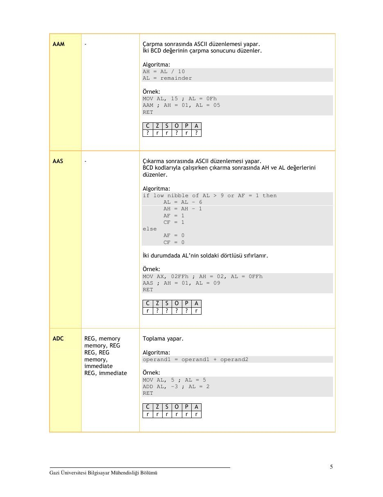
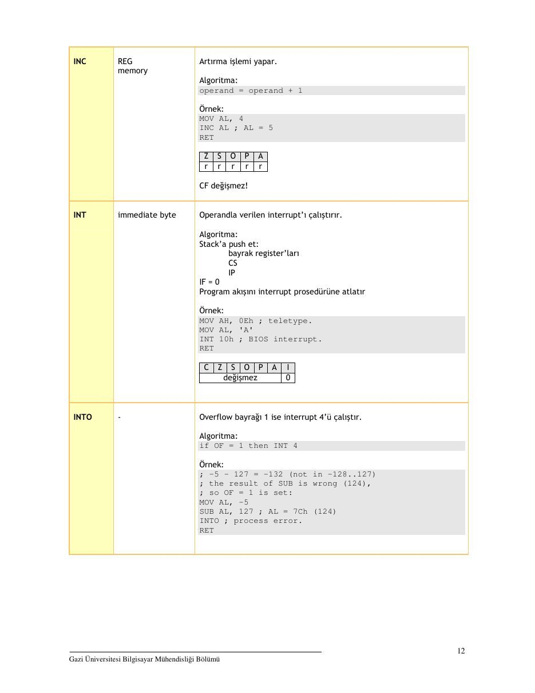

· EEM332
EEM332 Microprocessors: 8086 Instruction Set and Examples (Gazi University, M. Ali Akcayol)
EEM332 – Mikroişlemciler · 01.01.2007 · 18.10.2026
This post brings together the relevant notes and exercises from the Başkent University EEM332 Microprocessors course archive (2007–2007). 8086 instruction set, operands, and example assembly operations; lecture notes from 2007. Source: Gazi University, M. Ali Akcayol, 2007. PDF archive copies of the documents and, where available, the source code can be downloaded as a ZIP at the end of the post.
Note: This content belongs to a third-party source; it is shared for archival and nostalgic purposes with the source credited. It will be removed at the request of the rights holder.
_8086KomutlarOrnekler
8086 INSTRUCTION SET AND EXAMPLES
Assoc. Prof. Dr. M. Ali Akcayol
Gazi University, Department of Computer Engineering
(2007)
NOT: Bu doküman başta emu8086 programının yardım dosyası olmak üzere aşağıdakiThis document was prepared using the following sources
Barry B. Brey, The Intel Microprocessors 8086/8088, 80186/80188, 80286, 80386, 80486, Pentium, Pentium Pro Processor, Pentium II, Pentium Ill, Pentium 4 Architecture, Programming, and Interfacing (7th edition), Prentice Hall, ISBN: 0131974076, 2006.
Walter A. Triebel, Avtar Singh, Avtar Singh, The 8088 and 8086 Microprocessors: Programming, Interfacing, Software, Hardware, and Applications (4th edition), Prentice Hall, 0130930814, 2002.
Muhammad Ali Mazidi, Janice Gillispie-Mazidi, Muhammad A. Mazidi, Janice Catherine Gillispie-Mazidi, 80X86 IBM PC and Compatible Computers: Assembly Language, Design, and Interfacing (4th edition), Prentice Hall, 2002.
Gazi University, Department of Computer Engineering
GENERAL INFORMATION
GENERAL-PURPOSE REGISTERS
AX, BX, CX, DX, SI, DI, BP, SP
SPECIAL-PURPOSE REGISTERS
IP, FLAG REGISTERS
SEGMENT REGISTERS
CS, DS, ES, SS
OPERAND TYPES
REG : AX, BX, CX, DX, AH, AL, BL, BH, CH, CL, DH, DL, DI, SI, BP, SP.
SREG : DS, ES, SS, CS (second operand only).
memory _ : [BX], [BX+SI+7], variable, etc.
immediate : 5, -24, 3Fh, 10001101b, etc.
FLAG STATES
1 - the instruction sets this flag bit to 1.
0 - the instruction sets this flag bit to 0.
r - the flag value depends on the result of the instruction.
? - the flag value is undefined (may be 1 or 0).
VARIABLES
name DB valuename DW valuename DD value
Example
ORG 100hMOV AL, varl
MOV BX, var2RET ; program stops
VARI DB 7var2 DW 1234hARRAYS
a DB 48h, 65h, 6Ch, 6Ch, 6Fh, 00h
b DB 'Hello', 0... a[6] al1) a[2] a[3] a[4] a[5] b(6J b[1] b[2]
Gazi University, Department of Computer Engineering
MOV AL, a[3]MOV SI, 3MOV AL, a[SI]DUP operator
count DUP ( values )
c DB 5 DUP (9)
c DB 9, 9, 9, 9, 9d DB 5 DUP(1, 2)sh 2 0
CONSTANTS
name EQU <expression>k EQU 5
MOV AX, kMOV AX, 5FLAG BITS
C - Carry Flag
Z - Zero Flag
S - Sign Flag
O - Overflow Flag P - Parity Flag
A - Auxiliary Flag | - Interrupt Flag D - Direction Flag
DATA TRANSFER INSTRUCTIONS
PUSH, POP, LEA, LDS, LODS, LODSB, LODSW, STOS, STOSB, STOSW, MOVS, MOVSB, MOVSW, INS, INSB,INSW, OUTS, OUTSB, OUTSW, XCHG, LAHF, SAHF, XLAT, IN, OUT
ARITHMETIC AND LOGIC INSTRUCTIONS
ADD, INC, ADC, SUB, DEC, SBB, CMP, MUL, IMULI DIV, IDIV, CBW, CWD, DAA, DAS, AAA, AAD, AAM, AAS,
AND, OR, XOR, TEST, NOT, NEG, SHL, SHR, SAL, SAR, ROL, RCL, RCR, ROR, SCAS, CMPSPROGRAM CONTROL INSTRUCTIONS
JMP, JA, JAE, JB, JBE, JC, JE, JZ, JG, JGE, JL, JLE, INC, JNE, JNZ, JNC, JNE, JNZ, JNO, JNS, JNP, JPO,
JO, JP, JPE, JS, JCXZ, LOOP, CALL, RET, INT, IRET, HLT, NOPGazi University, Department of Computer Engineering
GENERAL INFORMATION
INSTRUCTION OPERANDS DESCRIPTION AND EXAMPLE
5 Performs ASCII adjust after addition. When working with BCD codes, it adjusts the AH and AL values after addition.
düzenler.
Algorithm
if low nibble of AL > 9 or AF = 1 then
AL = AL + 6
AH = AH +1
AF =1 CF=1 else
AF = 0
CF = 0
In both cases, the upper nibble of AL is cleared.
Example
MOV AX, 15 ; AH = 00, AL = OFh
AAA ; AH = 01, AL = 05
RET2 Performs ASCII adjust after division. Prepares two BCD values for division.
Algorithm
AL = (AH * 10) + AL
AH = 0
Ornek:MOV AX, 0105h ; AH = 01, AL = 05AAD ; AH = 00, AL = OFh (15)
RETc|zJsJojfJrPJA ?l)rjr|2)Jr)J2
Gazi University, Department of Computer Engineering
Performs ASCII adjust after multiplication. Adjusts the product of two BCD values.
Algorithm
AH = AL / 10
AL = remainder
Ornek:MOV AL, 15 ; AL = OFhAAM ; AH = 01, AL = 05
RETlol
N
oO} >
Performs ASCII adjust after subtraction. When working with BCD codes, it adjusts the AH and AL values after subtraction.
Algorithm
if low nibble of AL > 9 or AF - 1 then
AL = AL - 6
AH = AH - 1
AF =1 CE s1 else a (8)
CE = 0
In both cases, the upper nibble of AL is cleared.
Example
MOV AX, O2FFh ; AH = 02, AL = OFFhAAS ; AH = 01, AL = 09
RETSPAS ee rj(2J2(2)J2)r
REG, memory memory, REG
REG, REG
memory, immediate REG, immediate
Performs addition.
Algorithm
operandi = operandi + operand2
Ornek:MOV AL, 5; AL = 5
ADD AL, -3 ; AL = 2
RETGEZE
rİrjrlrjrjr
Gazi University, Department of Computer Engineering
REG, memory memory, REG
REG, REG
memory, immediate REG, immediate
Performs a logical AND on all corresponding bits of the two operands and stores the result in the left operand.
Truth table
1 AND 1=1
1 AND 0 o
0 AND 1 = 0
0 AND 0 = 0
Ornek:MOV AL, 'a' ; AL = 01100001b
AND AL, 11011111b ; AL = 01000001b ('A')RETae O|P olr|/r/ojr
procedure name label 4-byte address
Calls a procedure and pushes the return address (IP) onto the stack. The call can be made using a 4-byte address. In the address 1234h:5678h, the first value specifies the segment and the second value specifies the offset. This is a far call, and CS is pushed onto the stack together with IP.
Example
make, COM$
ORG 100h Oo; for COM file.CALL plADD AX, 1RET ; return to DOS.pl PROC i procedure declaration.
MOV AX, 1234h
RET 7; return to caller.pl ENDP
C[z{s[o[PlA unchanged
Converts a byte value to a word.
Algorithm
if high bit of AL = 1 then AH = 255 (OFFh)
else
AH = 0
Ornek:
MOV AX, 0 ; AH = 0, AL = 0
MOV AL, -5 ; AX = 000FBh (251)CBW } AX = OFFFBh (-5)
RETC[z{s[o[PlA unchanged
Gazi University, Department of Computer Engineering
. Clears the carry flag.
Algorithm
CE = 0
Cc
- Clears the direction flag. The SI and DI registers are incremented during successive operations performed with the CMPSB,
CMPSW, LODSB, LODSW,
MOVSB, MOVSW, STOSB, STOSW instructions.işlemlerde artırılır.
Algorithm
DF = 0
D
s Clears the interrupt enable flag. This disables hardware interrupts.
Algorithm
IF -0
I
i Complements the carry flag.
Algorithm
if CF - 1 then CF - 0 if CF = 0 then CF - 1
Cc
R
Gazi University, Department of Computer Engineering
REG, memory memory, REG
REG, REG
memory, immediate REG, immediate
Performs a comparison. Subtracts the right operand from the left operand, but the operands are not changed; only the flag bits are affected.
Algorithm
öperandi - operand2
The OF, SF, ZF, AF, PF, CF flags are updated according to the result.
Example
MOV AL, 5MOV BL, 5CMP AL, BL ; AL=5, ZF=1 (equal)
RETGSE
rİrjrlrjrjr
Compares one byte between ES:[DI] and DS:[SI].
Algorithm
DS:1SIJ — ES: [DI]
The OF, SF, ZF, AF, PF, CF flags are updated according to the result. if DF = 0 then
SI =sI+1
DI =DI+1
SI=st-1 DI =DI-1
Z(s|o r[re[r[r[r[r
Compares one word between ES:[DI] and DS:[SI].
Algorithm
DS: [SI] - ES: [DI]
The OF, SF, ZF, AF, PF, CF flags are updated according to the result. if DF = 0 then
SI = SI + 2
DI = DI +2
SI = SI - 2
DI = DI - 2
Z{[s[o rİrjrirjrjr
Gazi University, Department of Computer Engineering
. Extends a signed word to a doubleword.
Algorithm
if high bit of AX = 1 then DX = 65535 (OFFFFh)
else
DX = 0
Ornek:
MOV DX, 0 ; DX = 0
MOV AX, 0 ; AX = 0MOV AX, —5 ; DX AX = 00000h:0FFFBhCWD ; DX AX = OFFFFh:0FFFBh
RETCIZISTOJPTA
unchanged
2 Performs decimal adjust after addition. Adjusts the sum of two BCD values.
Algorithm
if low nibble of AL > 9 or AF - 1 then
AL = AL + 6
AF =1
if AL > 9Fh or CF = 1 then AL = AL + 60h
CF =1
Ornek:
MOV AL, OFh } AL = OFh (15)
DAA AE Gia
RETa O|P
3 Performs decimal adjust after subtraction. Adjusts the difference of two BCD values.
Algorithm
if low nibble of AL > 9 or AF - 1 then
AL = AL - 6
AF =1
if AL > 9Fh or CF = 1 then AL = AL — 60h
Cr Si
Ornek:
MOV AL, OFFh ; OFFh (<1)
DAS 7 99h, CF -1
RETc|zJsJoJPJA rİrjrirjrjr
Gazi University, Department of Computer Engineering
REG Performs a decrement. memory
Algorithm
operand = operand - 1
Ornek:MOV AL, 255 ; AL = OFFh (255 or -1)
DEC AL ; AL = OFEh (254 or -2)RETc|zJsJofJPJA rİrjirirjrjr
CF unchanged! REG Performs unsigned division. memory
Algorithm
when operand is a byte
AL - AX / operand AH - remainder
when operand is a word
AX = (DX AX) / operand DX = remainder
Ornek:‘MOV AX, 203 ; AX = 00CBh
MOV BL, 4DIV BL 7 AL = 50 (32h), AH = 3
RETcj|zjsJofJPJA
İNENENENENE
- Stops the program.
Example
MOV AX, 5
HLTc(zJsJoJPJA unchanged
Gazi University, Department of Computer Engineering
REG Performs signed division. memory
Algorithm
when operand is a byte
AL = AX / operand
AH = remainder
when operand is a word
AX = (DX AX) / operand
DX = remainder
Ornek:MOV AX, -203 ; AX = OFF35hMOV BL, 4IDIV BL ; AL = -50 (0CEh), AH = -3 (OFDh)
RETc/zJsJojJrPJA
Tl?l?l?7 lel?
REG Performs signed multiplication. memory
Algorithm
when operand is a byte
AX = AL * operand
when operand is a word
(DX AX) = AX * operand
Ornek:
MOV AL, -2
MOV BL, -4IMUL BL ; AX = 8
RETcj(zJsJojJrPJA r|2(/2(r|J2)(2
CF=OF=0 if the result does not overflow the operand size.
AL, im.byte Reads input from a port into AL or AX. AL, DX The second operand is the port number. AX, im.byte AX, DX Second operand is a port number. If ports above 255 need to be accessed, the DX register is used.
Ornek:
IN AX, 4 ; get status of traffic lights.
IN AL, 7 ; get status of stepper-motor.cj|zJsJoJPJA unchanged
Gazi University, Department of Computer Engineering
REG Performs an increment. memory
Algorithm
operand = operand + 1
Ornek:MOV AL, 4
INC AL ; AL
RET" a
SJOJPJA
r[r[r[r[r
CF unchanged!
immediate byte Invokes the interrupt specified by the operand.
Algorithm
Push onto the stack
flag registers cs
IP
IF=0 Transfers program flow to the interrupt procedure
Example
MOV AH, OBh ; teletype.
MOV AL, 'A'INT 10h ; BIOS interrupt.
RETCi[z[s[o[P[A unchanged 0
2 Invokes interrupt 4 if the overflow flag is 1.
Algorithm
if OF = 1 then INT 4
Ornek:} -5 - 127 = -132 (not in -128..127)
; the result of SUB is wrong (124),
ji so OF = 1 is set:MOV AL, -5SUB AL, 127 ; AL = 7Ch (124)INTO ; process error.
RETGazi University, Department of Computer Engineering
Returns from an interrupt.
Algorithm
Pop from the stack
IP
cs flags register
c(zJsJoJPJA
poppedlabel
Performs a short jump if the first operand is greater than the second. Performs an unsigned comparison.
Algorithm
if (CF = 0) and (ZF = 0) then jump
Example
include ‘emu8086.inc'make_COM#
ORG 100hMOV AL, 250CMP AL, 5
JA etiketiPRINT 'AL is not greater than 5'
JMP exit
etiketi:PRINT 'AL is greater than 5'
exit
RETCIZ[S[oO[P[A unchanged
Gazi University, Department of Computer Engineering
label Performs a short jump if the first operand is greater than or equal to the second. Performs an unsigned comparison.
Algorithm
if CF = 0 then jump
Ornek:
include 'emu8086.inc"make_COM# ‘ORG 100h
MOV AL, 5
CMP AL, 5
JAE etiketliPRINT 'AL is not above or equal to 5'
JMP exitetiketi; PRINT 'AL is above or egual to 5'
exit
RETc(zJsJoJPJA unchanged
label Performs a short jump if the first operand is less than the second. Performs an unsigned comparison.
Algorithm
if CF = 1 then jump
Ornek:
include 'emu8086.inc"make_COM#
ORG 100h
MOV AL, 1
CMP AL, 5
JB etiketlPRINT 'AL is not below 5!
JMP exit
etiketi:PRINT 'AL is below 5'
exit
RETCELLE
unchanged
Gazi University, Department of Computer Engineering
label
Performs a short jump if the first operand is less than or equal to the second. Performs an unsigned comparison.
Algorithm
if CF = 1 or ZF = 1 then jump
Ornek:
include 'emu8086.inc"make_COM#
‘ORG 100h
MOV AL, 5‘CMP AL, 5
JBE etiketliPRINT 'AL is not below or equal to 5' IMP exit
etiketi
PRINT 'AL is below or egual to 5'
exit
RETc(zJsJoJPJA unchanged
label
Performs a short jump if the carry flag bit is 1.
Algorithm
if CF = 1 then jump
Example
include 'emu8086.inc'make_COM#
‘ORG 100h
MOV AL, 255
ADD AL, 1
JC etiketiPRINT 'no carry"
JMP exit
siiketli:PRINT 'carry'
exit
RETcizJsJoJPJA unchanged
Gazi University, Department of Computer Engineering
label Performs a short jump if the CX register is 0.
Algorithm
if CX = 0 then jump
Example
include "emu8086.inc"make_COM#
ORG 100h
MOV CX, 0
JCXZ etiket1PRINT 'CX is not zero.' IMP exit
etiketl
PRINT 'CX is zero.'
exit
RETCIZ[s[O[P[A unchanged
label Performs a short jump if the first operand is equal to the second. Performs a signed or unsigned comparison.
Algorithm
if 2F = 1 then jump
Example
include 'emu8086.inc'make COM#
ORG 100h
MOV AL, 5
CMP AL, 5
JE etiketlPRINT 'AL is not equal to 5.' UMP exit
etiketli
PRINT 'AL is equal to 5.' exits
RETCI[Z[S[O][P[A
unchanged
Gazi University, Department of Computer Engineering
label
Performs a short jump if the first operand is greater than the second. Performs a signed comparison.
Algorithm
if (ZF = 0) and (SF = OF) then jump
Example
include 'emu8086.inc"make_COM# ‘ORG 100h
MOV AL, 5
CMP AL, -5
JG etiketliPRINT 'AL is not greater than -5.'
JMP exitetiketi; PRINT ' AL is greater than -5."
exit
RETc(zJsJoJPJA unchanged
label
Performs a short jump if the first operand is greater than or equal to the second. Performs a signed comparison.
Algorithm
if SF - OF then jump
Example
include 'emu8086.inc"make_COM#
ORG 100hMOV AL, 2CMP AL, -5JGE etiketliPRINT 'AL < -5'
JMP exit
etiketi:PRINT 'AL >= -5'
exit
RETCELLE
unchanged
Gazi University, Department of Computer Engineering
label
Performs a short jump if the first operand is less than the second. Performs a signed comparison.
Algorithm
if SF <> OF then jump
Example
include 'emu8086.inc"make_COM#
ORG 100hMOV AL, -2
CMP AL, 5
JL etiketliPRINT 'AL >= 5."
UMP exit etiketi;
PRINT 'AL < 5.'
exit
RETc(zJsJoJPJA unchanged
label
Performs a short jump if the first operand is less than or equal to the second. Performs a signed comparison.
Algorithm
if SF <> OF or ZF - 1 then jump
Example
include 'emu8086.inc"make_COM#
ORG 100hMOV AL, -2CMP AL, 5JLE etiketliPRINT 'AL > 5.'
JMP exit
etiketi:PRINT 'AL <= 5.'
exit
RETCELLE
unchanged
Gazi University, Department of Computer Engineering
label 4-byte address
Performs an unconditional jump. . The 4-byte address can be entered in the form 1234h:5678h. The first value is the segment and the second is the offset address.
Algorithm
always jump
Ornek:include 'emu8086.inc'make_COM#
ORG 100hMOV AL, 5UMP etiket1 ; jump over 2 lines! PRINT ‘Not Jumped!"
MOV AL, 0etiketi
PRINT 'Got Here!
RETc(zJsJoJPJA unchanged
label
Performs a short jump if the first operand is not greater than the second. Performs an unsigned comparison.
Algorithm
if CF = 1 or ZF = 1 then jump
Ornek:include 'emu8086.inc"make_COM#
ORG 100hMOV AL, 2CMP AL, 5JNA etiketliPRINT 'AL is above 5."
JMP exitetiket lc
PRINT 'AL is not above 5."
exit
RETCIZISTOJPTA
unchanged
Gazi University, Department of Computer Engineering
label
Performs a short jump if the first operand is neither greater than nor equal to the second. Performs an unsigned comparison.
Algorithm
if CF = 1 then jump
Ornek:
include 'emu8086.inc"make_COM#
ORG 100hMOV AL, 2
CMP AL, 5
JNAE etiketiPRINT 'AL >= 5."
JMP exitetiketi;
PRINT 'AL < 5.'
exit
RETc(zJsJoJPJA unchanged
label
Performs a short jump if the first operand is not less than the second. Performs an unsigned comparison.
Algorithm
if CF = 0 then jump
Ornek:include 'emu8086.inc"make_COM#
ORG 100hMOV AL, 7CMP AL, 5JNB etiket1PRINT 'AL < 5.'
JMP exit
etiketi:PRINT 'AL >= 5."
exit
RETCELLE
unchanged
Gazi University, Department of Computer Engineering
label Performs a short jump if the first operand is neither less than nor equal to the second. Performs an unsigned comparison.
Algorithm
if (CF = 0) and (ZF = 0) then jump
Ornek:
include 'emu8086.inc"make_COM# ‘ORG 100h
MOV AL, 7
CMP AL, 5
JNBE etiketiPRINT 'AL <= 5."
JMP exitetiketi;
PRINT 'AL > 5.'
exit
RETc(zJsJoJPJA unchanged
label Performs a short jump if the carry flag bit is 0.
Algorithm
if CF = 0 then jump
Ornek:
include 'emu8086.inc'make_COM# ‘ORG 100h
MOV AL, 2
ADD AL, 3
JNC etiketliPRINT ‘has carry.' UMP exit etiketi; PRINT 'no carry.'
exit
RETcizJsJoJPJA unchanged
Gazi University, Department of Computer Engineering
label Performs a short jump if the first operand is not equal to the second. Performs a signed or unsigned comparison.
Algorithm
if ZF = 0 then jump
Ornek:
include 'emu8086.inc'make_COM#
ORG 100h
MOV AL, 2
CMP AL, 3INE etiketi
PRINT 'AL = 3."
IMP exit etiketlik PRINT 'Al <> 3.'
exit
RETCIZ[S[O[P[A
unchanged
label Performs a short jump if the first operand is not greater than the second. Performs a signed comparison.
Algorithm
if (ZF = 1) and (SF <> OF) then jump
Example
include 'emu8086.inc"make_COM#
ORG 100hMOV AL, 2CMP AL, 3ING etiket1
PRINT 'AL > 3.'
JMP exit
etiketi:PRINT 'Al <= 3."
exit
RETCIZJISToJPJA unchanged
Gazi University, Department of Computer Engineering
label Performs a short jump if the first operand is neither greater than nor equal to the second. Performs a signed comparison.
Algorithm
if SF <> OF then jump
Example
include 'emu8086.inc"make_COM# ‘ORG 100h
MOV AL, 2
CMP AL, 3
JNGE etiketliPRINT 'AL >= 3.'
JMP exitetiketi; PRINT 'Al < 3.'
exit
RETc(zJsJoJPJA unchanged
label Performs a short jump if the first operand is not less than the second. Performs a signed comparison.
Algorithm
if SF - OF then jump
Example
include 'emu8086.inc"make_COM#
ORG 100hMOV AL, 2CMP AL, -3JNL etiketliPRINT 'AL < -3.'
JMP exitetiketi
PRINT 'Al >= -3.'
exit
RETCELLE
unchanged
Gazi University, Department of Computer Engineering
label Performs a short jump if the first operand is neither less than nor equal to the second. Performs a signed comparison.
Algorithm
if (SF - OF) and (ZF - 0) then jump
Example
include 'emu8086.inc"make_COM#
‘ORG 100h
MOV AL, 2CMP AL, -3İNLE etiketi
PRINT 'AL <= -3.'
JMP exit
etiketi:PRINT 'Al > -3.'
exit
RETc(zJsJoJPJA unchanged
label Performs a short jump if the overflow flag bit is 0.
Algorithm
if OF = 0 then jump
Ornek:-5 - 2 = -7 (inside -128..127) the result of SUB is correct,
so OF = 0
include 'emu8086.inc'make_COM#
ORG 100h
MOV AL, -5
SUB AL, 2 ; AL = 0F9h (-7)
JNO etiketliPRINT 'overflow!' IMP exit etiketlik PRINT 'no overflow."
exit
RETc(zJsJoJPJA unchanged
Gazi University, Department of Computer Engineering
label Performs a short jump if the parity flag bit is 0 (odd). Only the least significant 8 bits are checked. It is set by the CMP, SUB, ADD,
TEST, AND, OR, XOR instructions.Algorithm
if PF = 0 then jump
Ornek:include 'emu8086.inc'make_COM#
ORG 100hMOV AL, 00000111b ; AL = 7
OR AL, 0 ; just set flags.INP etiket1
PRINT 'parity even.'
JMP exitetiketi
PRINT 'parity odd.'
exit
RETcj|zJsJoJPJAa unchanged
label Performs a short jump if the sign flag bit is not 1 (positive). It is set by the CMP, SUB, ADD, TEST, AND, OR, XOR instructions.
Algorithm
if SF = 0 then jump
Ornek:
include 'emu8086.inc'make_COM#
ORG 100h
MOV AL, 00000111b ; AL = 7
OR AL, 0 ; just set flags.ONS etiket1 PRINT 'signed.' UMP exit
etiketl
PRINT 'not signed.’
exit
RETC[z{s[o[PlA unchanged
Gazi University, Department of Computer Engineering
label Performs a short jump if the zero flag (ZF) bit is 0 (positive).
It is set by the CMP, SUB, ADD, TEST, AND, OR, XOR instructions.Algorithm
if ZF = 0 then jump
Ornek:include 'emu8086.inc"make_COM#
ORG 100hMOV AL, 00000111b ; AL=7
OR AL, 0 ; just set flags.
JNZ etiket1PRINT 'zero.'
UMP exit
etiketi;
PRINT 'not zero.'
exit
RETc(zJsJoJPJA unchanged
label Performs a short jump if the overflow flag (OF) bit is 1.
Algorithm
if OF - 1 then jump
Example
e iye 132 (ice in 128127)
; the result of SUB is wrong (124),i so OF = 1 is set
include 'emu8086.inc'make_COM#
org 100hMOV AL, -5SUB AL, 127 ; AL = 7Ch (124)JO etiketiPRINT 'no overflow.'
IMP exit
etiketii
PRINT 'overflow!'
exit
RETC[Z[S[O[P[A
unchanged
Gazi University, Department of Computer Engineering
label
Performs a short jump if the parity flag bit is 1 (even). Only the least significant 8 bits are checked. It is set by the CMP, SUB,
ADD, TEST, AND, OR, XOR instructions.Algorithm
if PF = 1 then jump
Ornek:include 'emu8086.inc"make_COM#
ORG 100hMOV AL, 00000101b ; AL = 5
OR AL, 0 ; just set flags.
JP etiketlPRINT 'parity odd.'
UMP exit
etiketi
PRINT 'parity even."
exit
RETcj|zJsJoJPJAa unchanged
label
Performs a short jump if parity is even. Only the least significant 8 bits are checked. It is set by the CMP, SUB, ADD, TEST, AND, OR, XOR instructions.
Algorithm
if PF = 1 then jump
Example
include 'emu8086.inc"make_COM#
ORG 100hMOV AL, 00000101b ; AL = 5
OR AL, 0 ; just set flags.
JPE etiket1PRINT 'parity odd.'
JMP exitetiketli
PRINT 'parity even.'
exit
RETc(zJsJoJPJA unchanged
Gazi University, Department of Computer Engineering
label Performs a short jump if parity is odd. Only the least significant 8 bits are checked. It is set by the CMP, SUB, ADD, TEST, AND, OR, XOR instructions.
Algorithm
if PF = 0 then jump
Ornek:include 'emu8086.inc"make_COM#
ORG 100hMOV AL, 00000111b ; AL = 7
OR AL, 0 ; just set flags.
JPO etiketliPRINT 'parity even.'
UMP exit
etiketi
PRINT 'parity odd.'
exit
RETcj|zJsJoJPJAa unchanged
label Performs a short jump if the sign flag bit is 1 (negative). It is set by the CMP,
SUB, ADD, TEST, AND, OR, XOR instructions.Algorithm
if SF = 1 then jump
Ornek:
include 'emu8086.inc'make_COM#
ORG 100h
MOV AL, 10000000b ; AL = -128
OR AL, 0 ; just set flags.
JS etiketiPRINT 'not signed.' UMP exit
etiketl
PRINT 'signed.'
exit
RETC[z{s[o[PlA unchanged
Gazi University, Department of Computer Engineering
label Performs a short jump if zero (ZF=1). It is set by the CMP, SUB, ADD,
TEST, AND, OR, XOR instructions.Algorithm
if ZF = 1 then jump
Example
include 'emu8086.inc"make_COM#
ORG 100hMOV AL, 5CMP AL, 5JZ etiketiPRINT 'AL is not equal to 5.' UMP exit
etiketi;
PRINT 'AL is equal to 5.'
exit
RETc(zJsJoJPJA unchanged
2 Loads the least significant 8 bits of the flags register into the AH register.
Algorithm
AH = flags register AH: 7 6 5 4 3 2 1 te)
(SF) [ZF] [0] [AF] [0] [PF] [1] [CF]
Bits 1, 3, 5 are reserved.
CIZ[S[oO[P[A unchanged
REG, memory Loads the doubleword data fetched from memory into the destination operand register and into DS.
Algorithm
REG = first word DS = second word
Ornek:make_COM#
ORG 100hLDS AX, m
RETm DW 1234hDW 5678h
ENDAX is set to 1234h, DS is set to 5678h.
cJzJsJoJPJA unchanged
Gazi University, Department of Computer Engineering
REG, memory Loads the effective address.
Algorithm
REG = address of memory (offset)
Example
make_COM#
ORG 100h
LEA AX, m
RETm DW 1234h
ENDAX is set to 0104h.
The LEA instruction is 3 bytes and the RET instruction is 1 byte. Sincethe program starts at address 0100h, the address of m is 0104h.
CIZJSJOJPJA
unchanged
REG, memory Loads the doubleword data fetched from memory into the destination operand register and into ES.
Algorithm
REG = first word ES = second word
Ornek:make COM$#
ORG 100hLES AX, m
RETm DW 1234hDW 5678h
ENDThe AX register becomes 1234h and the ES register becomes 5678h.
CIZJSJoJPJA unchanged
Gazi University, Department of Computer Engineering
. Loads one byte from address DS:[SI] into the AL register. The SI value is updated (incremented by 1 (D=0), decremented by 1 (D=1))
Algorithm
AL = DS:1SI)J
if DF = 0 then Sr = Si + 1 else
Seki sl
Example
make_COM#
ORG 100h
LEA SI, al
MOV CX, 5
MOV AH, OEh
m: LODSB
INT 10h
LOOP mRETal DB 'H', 'e', Cl, '1!, to!CiZ[s[o[P[A unchanged
i Loads one word from address DS:[SI] into the AX register. The SI value is updated (incremented by 2 (D=0), decremented by 2 (D=1))
Algorithm
AX = DS:(SIJ
if DF = 0 then Su = si 2 else
Sh ei = 2
Ornek:make_COM#
ORG 100hLEA SI, alMOV CX, 5REP LODSW ; finally there will be 555h in AX.
RETal dw 1lih, 222h, 333h, 444h, 555hCIZJSJoJPJA unchanged
Gazi University, Department of Computer Engineering
label Decrements CX by one and jumps to the label if CX is not zero.
Algorithm
ex sGX-1
if CX <> 0 then
jumpelse
no jump, continue
Example
include 'emu8086.inc"make_COM#
ORG 100hMOV CX, 5etiker ik
PRININ 'loop!'
LOOP etiket1RETCI[Z[S[O][P[A
unchanged
label Decrements CX by one and jumps to the label if CX is not zero and equality holds (between the two given operands) (ZF=1).
Algorithm
xx =
if (CX <> 0) and (ZF = 1) then
jumpelse
no jump, continue
Ornek:; Loop until result fits into AL alone,
; or 5 times. The result will be over 255
; on third loop (100+100+100),; so loop will exit.include 'emu8086.inc’make_COM#
ORG 100hMOV AX, OMOV CX, 5etiketi
PUTC '*'
ADD AX, 100CMP AH, 0LOOPE etiket1lRETC[Z[S[O[Pl/A unchanged
Gazi University, Department of Computer Engineering
label Decrements CX by one and jumps if CX is not zero and equality does not hold (between the two given operands) (ZF=0)
Algorithm
EK =x
if (CX <> 0) and (ZF = 0) then
jumpelse
no jump, continue
Ornek:; Loop until '7' is found,
; or 5 times.include 'emu8086.inc'make_COM#
ORG 100hMOV SI, 0MOV CX, 5etiketi
PUTC '4!
MOV AL, v1[SI]INC SI ; next byte (SI=SI+1).
CMP AL, 7LOOPNE etiketlRETvl db 9, 8, 7, 6, 5cizJsJoJPJA unchanged
label Decrements CX by one and jumps to the label if CX is not zero and ZF=0.
Algorithm
CX = CX -— 1
if (CX <> 0) and (ZF = 0) then
jumpelse
no jump, continue
Ornek:; Loop until '7' is found,7 or 5 times.
include 'emu8086.inc!make_COM#
ORG 100hMOV SI, 0MOV CX, 5etiketl
rege) Tet
MOV AL, v1[SI]INC SI ; next byte (SI=SI+1).CMP AL, 7
LOOPNZ etiketli
RETvl db 9, 8, 7, 6, 5cj|zJsJoJPJAa unchanged
Gazi University, Department of Computer Engineering
label Decrements CX by one and jumps to the label if CX is not zero and ZF=1.
Algorithm
cece
if (CX <> 0) and (ZF = 1) then
jumpelse
no jump, continue
Ornek:; Loop until result fits into AL alone,
; or 5 times. The result will be over 255
; on third loop (100+100+100),; so loop will exit.include 'emu8086.inc'make_COM#
ORG 100hMOV AX, 0MOV CX, 5etiketi
Eyre 1 #
ADD AX, 100CMP AH, 0LOOPZ etiketlRETCIZ[S[O[P[A
unchanged
MOV REG, memory The second operand is copied to the first operand.| memory, REG |
|---|
REG, REG With the MOV instruction
memory, * values cannot be assigned to the CS and IP registers. immediate * Values cannot be transferred between two segment registers (first REG, immediate they must be moved to a general-purpose register). SREG, memory
memory, SREG Algorithm
REG, SREG operandl = operand2
SREG, REG
Ornek:make_COM#
ORG 100hMOV AX, OB800h ; set AX = B800h (VGA memory).
MOV DS, AX ; copy value of AX to DS.MOV CL, 'A' ; CL = 41h (ASCII code).MOV CH, 01011111b ; CL = color attribute.
MOV BX, 15Eh ; BX = position on screen.MOV [BX], CX ; w.[0B800h:015Eh] = CX.RET ; returns to operating system.cj|zJsJoJPJAa unchanged
Gazi University, Department of Computer Engineering
. Copies one byte from address DS:[SI] to address ES:[DI]. The SI and DI registers are updated.
Algorithm
ES:(DIJ = DS:[SI]
if DF = 0 then SE = Si 4 1 DI =DI+1
SI=st-1
DI = DI-1
Ornek:make_COM#
ORG 100hLEA SI, alLEA DI, a2MOV CX, 5REP MOVSBRETai Bel, 2, 3,475
a2 DB 5 DUP (0)c(zJsJoJPJA unchanged
. Copies one word from address DS:[SI] to address ES:[DI]. The SI and DI registers are updated.
Algorithm
ES:(DI] = DS:(SIJ
if DF = 0 then
SI = SI + 2
DI = DI + 2
SI = SI -2
DI = DI - 2
Ornek:make_COM#
ORG 100hLEA SI, alLEA DI, a2MOV CX, 5REP MOVSWRETal DW 1,2,3,4,5
a2 DW 5 DUP(0)CIZ[s[O[P[A unchanged
Gazi University, Department of Computer Engineering
REG
memory
Performs unsigned multiplication.
Algorithm
when operand is a byte
AX - AL * operand.
when operand is a word
(DX AX) = AX * operand.
Ornek:MOV AL, 200 ; AL = 0C8h
MOV BL, 4MUL BL ; AX = 0320h (800)
RETC{[Z{[s[O[PlA cl? [?[r[?[?
CF=OF=0 when high section of the result is zero.
REG
memory
Negates a number (two's complement).
Algorithm
Invert all bits of the operand
Add 1 to inverted operandOrnek:MOV AL, 5 ; AL = 05hNEG AL ; AL = OFBh (-5) NEG AL ; AL = 05h (5)
RETc|zJsJo rİrjrirjrjr
Performs no operation.
Algorithm
Do nothing
Example
; do nothing, 3 times:
NOPNOPNOPRETcizJsJoJPJA unchanged
Gazi University, Department of Computer Engineering
REG Inverts every bit of the operand (one's complement). memory
Algorithm
if bit is 1 turn it to 0. if bit is 0 turn it to 1.
Ornek:MOV AL, 00011011bNOT AL ; AL = 11100100b
RETCIZ[sS[O[P[A
unchanged REG, memory Performs a logical OR on each pair of corresponding bits of the two operands. memory, REG
REG, REG Truth table
memory, 1OR1=1
immediate 1 oR 0 REG, immediate OORI
Example
MOV AL, 'A' ; AL = 01000001bOR AL, 00100000b ; AL = 01100001b ('a')
RETc|zJsJojfJrPJA olr|r/ojJrfJ2
OUT im.byte, AL The AL or AX register is sent to the given port.im.byte, AX The first operand is the port number. If ports above 255 need DX, AL to be accessed, the DX register is used.
DX, AX
Example
MOV AX, OFFEh ; Turn on allOUT 4, AX ; traffic lights.MOV AL, 100b ; Turn on the thirdOUT 7, AL ; magnet of the stepper-motor.cj|zJsJoJPJAa unchanged
Gazi University, Department of Computer Engineering
REG
SREG
memory
Takes a 16-bit value from the stack and transfers it to the operand.
Algorithm
operand = SS:[SP] (top of the stack)
SP - SP 42
Example
MOV AX, 1234hPUSH AXPOP DX ; DX = 1234hRETcj|zJsJoJPJAa unchanged
Pops all general-purpose registers (DI, SI, BP, SP, BX, DX, CX, AX) from the stack. The SP value is ignored.
Not: Bu komut sadece 80186 ve üstü lişlemcilerde kullanılır.Algorithm
POP DIPOP SIPOP BPPOP xx (SP is ignored)
POP BXPOP DXPOP CXPOP AXcj|zJsJoJPJA unchanged
Pops a value from the stack into the flags register.
Algorithm
flags = SS:(SPJ (top of the stack)
SP = SP + 2
C[Z[s[oO[PlA
PoppedGazi University, Department of Computer Engineering
REG
SREG
memory immediate
Stores a 16-bit value in the stack.
Not: PUSH immediate sadece 80186 ve üstü işlemcilerde kullanılır.Algorithm
e
SS:[SP] (top of the stack) = operand
Ornek:MOV AX, 1234hPUSH AXPOP DX ; DX = 1234hRETCIZJSJOJPJA
unchanged
Pushes all general-purpose registers (AX, CX, DX, BX, SP, BP, SI, DI) onto the stack. The value of the SP register before the PUSHA instruction is used.
Not: Bu komut sadece 80186 ve üstü işlemcilerde kullanılır.Algorithm
PUSH AX
PUSH CX
PUSH DX
PUSH BX
PUSH SP
PUSH BP
PUSH SI
PUSH DIc(zJsJoJPJA unchanged
Stores the flags register on the stack.
Algorithm
SP = SP - 2
SS:[SP] (top of the stack) = flags
cj|zJsJoJPJAa unchanged
Gazi University, Department of Computer Engineering
memory, immediate
REG, immediate memory, CL
REG, CL
Rotates the first operand left through the carry flag. The number of bit rotations is specified by the second operand.
Algorithm
shift all bits left, the bit that goes off is set to CF and
previous value of CF is inserted to the right-most position.
Example
STC ; set carry (CF=1).
MOV AL, 1Ch ; AL = 00011100bRCL AL, 1 ; AL = 00111001b, CF=0.RET
clo
rjrOF=0 if the first operand keeps its sign.
memory, immediate
REG, immediate memory, CL
REG, CL
Rotates the first operand right through the carry flag. The number of bit rotations is specified by the second operand.
Algorithm
shift all bits right, the bit that goes off is set to
CE
and previous value of CF is inserted to the left-most
position.Example
STC ; set carry (CF=1).
MOV AL, 1Ch ; AL = 00011100bRCR AL, 1 ; AL = 10001110b, CF=0.RET
clo
rirOF=0 if the first operand keeps its sign.
instruction to repeat
Repeats the MOVSB, MOVSW, LODSB, LODSW, STOSB, STOSW instructions CX times.Algorithm
check_cx
if CX <> 0 then
do following chain instruction cX = CX - 1
go back to check_cx
else
exit from REP cycle
Gazi University, Department of Computer Engineering
instruction to repeat
Repeats the CMPSB, CMPSW, SCASB, SCASW instructions as long as ZF=1 (the result is equal) and at most CX times.
Algorithm
check, cx
if CX <> 0 then
do following chain instruction
CX = CX -— 1
if ZF = 1 then
m go back to check_cx else
m exit from REPE cycle else
exit from REPE cycle
instruction to repeat
Repeats the CMPSB, CMPSW, SCASB, SCASW instructions as long as ZF=0 (the result is not equal) and at most CX times.
Algorithm
check cx
if CX <> 0 then
do following chain instruction CX = cx -1
if ZF = 0 then
go back to check_cx else
m exit from REPNE cycle else
exit from REPNE cycle
instruction to repeat
Repeats the CMPSB, CMPSW, SCASB, SCASW instructions as long as ZF=0 (the result is not zero) and at most CX times.
Algorithm
check cx
if CX <> 0 then
do following chain instruction cX = CX -1
if ZF = 0 then
m go back to check_cx else
m exit from REPNZ cycle else
exit from REPNZ cycle
Gazi University, Department of Computer Engineering
instruction to repeat Repeats the CMPSB, CMPSW, SCASB, SCASW instructions as long as ZF=1 (the result is zero) and at most CX times.
Algorithm
check, c if CX <> 0 then
do following chain instruction
CX = CX -— 1
if ZF = 1 then
go back to check_cx
else
exit from REPZ cycle
else
exit from REPZ cycle
z Returns from a near procedure.
Algorithm
Pop from stack:IP
if immediate operand is present: SP = SP + operand
Ornek:make_COM#
ORG 100h ; for COM file.
CALL plADD AX, 1RET ; return to OS.pl PROC ; procedure declaration.
MOV AX, 1234hRET ; return to caller,pl ENDP
CIZJSJOJPJA
unchanged
5 Returns from a far procedure.
Algorithm
Pop from stack:IP
cs
if immediate operand is present: SP = SP + operand
c(zJsJoJPJA unchanged
Gazi University, Department of Computer Engineering
memory, immediate
REG, immediate memory, CL
REG, CL
Rotates the first operand left. The number of bit rotations is specified by the second operand.
Algorithm
shift all bits left, the bit that goes off is set to CF and
the same bit is inserted to the right-most position.
Ornek:
MOV AL, 1Ch ; AL = 00011100b
ROL AL, 1 ; AL = 00111000b, CF=0.
RET
o
rirOF=0 if the first operand keeps its sign.
memory, immediate REG, immediate memory, CL
REG, CL
Rotates the first operand right. The number of bit rotations is specified by the second operand.
Algorithm
shift all bits right, the bit that goes off is set to
CE
and the same bit is inserted to the left-most
position.Example
MOV AL, 1Ch ; AL = 00011100b
ROR AL, 1 ; AL = 00001110b, CF=0.
RET
o
tierOF=0 if the first operand keeps its sign.
Loads the value of the least significant 8 bits of the flags register from the AH register.
Algorithm
flags register = AH
AH bit:7 6 5 4 2 Cs 1 o
(SF] [ZF] [0] [AF] [0] [PF] [1] [CF]
Bits 1, 3, 5 are reserved.
Gazi University, Department of Computer Engineering
memory, immediate
REG, immediate memory, CL
REG, CL
Arithmetically shifts the first operand left. The number of shifts is specified by the second operand.
Algorithm
Shift all bits left, the bit that goes off is set to Cr.
Zero bit is inserted to the right-most position.
Ornek:MOV AL, OEOh ; AL = 11100000b
SAL AL, 1 ; AL = 11000000b, CF=1.
RETo rjr
OF=0 if the first operand keeps its sign.
memory, immediate REG, immediate memory, CL
REG, CL
Arithmetically shifts the first operand right. The number of shifts is specified by the second operand.
Algorithm
Shift all bits right, the bit that goes off is set to
CE.
The sign bit that is inserted to the left-most position
has the same value as before shift.
Example
MOV AL, OEOh ; AL = 11100000b
SAR AL, 1 ; AL = 11110000b, CF=0.
MOV BL, 4Ch ; BL = 01001100bSAR BL, 1 ; BL = 00100110b, CF=0.RET
clo
rirREG, memory memory, REG
REG, REG
memory, immediate REG, immediate
Performs subtraction with borrow.
Algorithm
operandi = operandi - operand2 - CF
Example
sTC
MOV AL, 5SBB AL, 3;AL-5-3-1-1
RETGazi University, Department of Computer Engineering
Compares AL with the value at address ES:[DI].
Algorithm
ES:(DI] - AL
set flags according to result
OF, SF, ZF, AF, PF, CF
if DF = 0 then
DI = DI +1
else
DI=DI-1
c|zJsJo rİririririr
Compares AX with the value at address ES:[DI].
Algorithm
ES:(DIJ - AX
set flags according to result
OF, SH, ZE, AR, PE, CE
if DF = 0 then
DI = DI + 2
else
DI = DI - 2
Gebimak rİririririr
memory, immediate REG, immediate memory, CL
REG, CL
Shifts the first operand left. The number of shifts is specified by the second operand.
Algorithm
Shift all bits left, the bit that goes off is set to
EE.
Zero bit is inserted to the right-most position.
Example
MOV AL, 11100000b
SHL AL, 1 ; AL = 11000000b, CF=1.RET
clo
rirOF=0 if the first operand keeps its sign.
Gazi University, Department of Computer Engineering
memory, immediate
REG, immediate memory, CL
REG, CL
Shifts the first operand right. The number of shifts is specified by the second operand.
Algorithm
Shift all bits right, the bit that goes off is set to
CE.
Zero bit is inserted to the left-most position.
Example
MOV AL, 00000111b
SHR AL, 1 ; AL = 00000011b, CF=1.RET
clo
rirOF=0 if the first operand keeps its sign.
Sets the carry flag.
Algorithm
GE s1
Sets the direction flag. SI and DI are decremented (D=1) or incremented (D=0) by the CMPSB, CMPSW, LODSB, LODSW,
MOVSB, MOVSW, STOSB, STOSW instructions(D=1) or incremented (D-0).
Algorithm
DE = 1
Sets the interrupt flag. This enables hardware interrupts.
Algorithm
TE -İ
inGazi University, Department of Computer Engineering
Copies the value of the AL register to address ES:[DI]. DI is updated.
Algorithm
ES: [DI]
if DF =
DI = DI
else
DI = DI
AL
then
+ ol
Ornek:make_COM#
ORG 100hLEA DI, al
MOV AL, 12h
MOV CX, 5REP STOSBRETal DB 5 dup(0)CI[Z[S[O][P[A
unchanged
Copies the value of the AX register to address ES:[DI]. DI is updated.
Algorithm
ES:(DI] = AX
if DF = 0 then
DI = DI + 2
else
DI = DI - 2
Example
make_COM#
ORG 100hLEA DI, al
MOV AX, 1234h
MOV CX, 5REP STOSWRETal DW 5 dup(0)CIZISTOJPTA
unchanged
Gazi University, Department of Computer Engineering
REG, memory memory, REG
REG, REG
memory, immediate REG, immediate
Performs subtraction.
Algorithm
operandi = operand1 — operand2
Example
MOV AL, 5SUB AL, 1; AL < 4
RETc|zJsJo rİrjirirjrjr
REG, memory memory, REG
REG, REG
memory, immediate REG, immediate
Applies a logical AND to all corresponding bits of the two operands. The operand values are not changed; the ZF, SF and PF flag bits are changed.
Truth table
1 AND 1 =1
1 AND
0 AND
0 AND
ore
cooOrnek:
MOV AL, 00000101b
TEST AL, 1 ; ZF = 0.TEST AL, 10b ; ZF 1.RET
İİolr|/rJojr
REG, memory memory, REG
REG, REG
Exchanges the values of the two operands.
Algorithm
operandl < — > operand2
Example
MOV AL, 5MOV AH, 2XCHG AL, AH ; AL = 2, AH =
XCHG AL, AH ; AL = 5, AH = 2
RET" a
C[z{s[o[PlA unchanged
Gazi University, Department of Computer Engineering
Translates a byte using a table. Copies one byte of data from address DS:[BX + unsigned AL] into the AL register.
Algorithm
AL = DS:(BX + unsigned AL]
Ornek:make_COM#
ORG 100hLEA BX, datMOV AL, 2XLATB ; AL = 33h
RETdat DB 11h, 22h, 33h, 44h, 55hCIZ[S[oO[P[A unchanged
REG, memory memory, REG
REG, REG
memory, immediate REG, immediate
Performs an XOR on the corresponding bits of the two operands. The result is stored in the first operand.
Truth table
1 XOR 1 = 0
1X0RO-1
0 XOR1=1
0 XOR 0 = 0
Example
MOV AL, 00000111b
XOR AL, 00000010b ; AL = 00000101b
RETCIZJSJoJPJA olr|r/ojJrfJ2
Gazi University, Department of Computer Engineering
EXAMPLES
Adds two hexadecimal numbers of 20 digits each located in memory. first number 0100h-0109h
second number 010Ah-0113h
result 0114h-011Dh
m.ali akcayol
org 0100h
mov (0100h),8A76h
mov [0102h],6557h
mov [0104h],1A98h
mov [0106h],713Eh
mov [0108h],8797h
mov [010Ah],2587h
mov [010Ch],8B96h
mov [010Eh],2588h
mov [0110h],46D1h
mov [0112h],9854h
mov si, 0108h ; the rightmost 4 digits (1 word) of the 1st number are fetched
mov bx, [si]
add bx, [si+000Ah] ; added to the rightmost 4 digits of the 2nd number
mov [sit+0014h],bx ; result is written to memory
jne atlal ; skip if carry=0mov dx,1 ; carry is saved in dx before the sub operation
atlal:sub si,2 ; move 4 digits (1 word) to the left
dongu:mov bx, [si]add bx, [si+000Ah]
add bx, dxxor dx,dxmov [sit+0014h],bxthe previous 4 digits (1 word) of the 1st number are fetched added to the previous 4 digits of the 2nd number carry is added if present
the saved carry value is cleared
result is written to memory
inc atla2 ; skip if carry=0
mov di,1
atla2:
sub si,2 ; move 4 digits (1 word) to the leftcmp si, 0100h
jae dongucall mesajyazhit
mesajyaz proc
mov dx, offset mesajvarmov ah, 9
int 21h
rethas the leftmost position been reached? if not, return to the start
mesajvar db "toplama islemi tamamlandi... $"mesajyaz endp
Gazi University, Department of Computer Engineering
NNNNNNNNNN
algorithm that sorts in place the number of characters specified by ADET out of a total of 100 characters in memory - bubblesort
=
BRA RRR Be BS
BEBE
m.ali akcayol
org 0100h
diziO0 db 'v','a',
dizil db 'v','a',
dizi2 db 'v','a',
dizi3 db 'v','a',
dizi4 db 'v','a',
dizi5 db 'v','a',
dizi6 db 'v','a',
dizi7 db 'v','a',
dizi8 db 'v','a',
dizi9 db 'v','a',
ADET dw 9mov dx, ADET
call ekranayazdirdongu
mov cx,0
icdongu:
mov si,cx
mov al, [dizid+si]
mov bl, [dizid+sit1]
cmp al,bl
jbe devam
call degistir
devam:
inc cx
cmp cx,dx
jnb icdongusonu
jmp icdongu
icdongusonu:
dec dx
cmp dx, 0
je bitir
jmp dongu
bitir:
call ekranayazdir
hitdegistir proc
mov [dizid+si],bl
mov [dizi0+si+1],al
retdegistir endp
ekranayazdir proc
push dx
mov cx, 0
mov ah, 2
tekrar:first 10
characters are sorted
number of elements - 1
repeat for the total number of elements repeat for the number of remaining unsorted elements
left right
left left
element element
if smaller, do not swap; if larger, swap
increment among the unsorted elements have we reached the end of the unsorted elements end of the unsorted elements unsorted elements continue
no unsorted elements remain in the inner loop
unsorted unsorted unsorted unsorted
decrement the number of remaining elements by one is the number of elements 0?
if the number of elements is 0, finish; if elements remain, go back to the start
print sorted program end
side by side
two characters swap places
counter of characters to be assigned to dl
int 21,ah=2, print character to screen
Gazi University, Department of Computer Engineering
mov
mov
int
inc
cmpja cikissiyvex
dl, 21h cx cx,
jmp tekrar
cikis:mov
int
mov
int
pop
retdl, 21h dı, 21h dx
ODh
OAh
[dizidtsi]
ADET
ekranayazdir endp
int 21, ah=2, print character to screenreturnnew line
the old value of dl was retrieved
Gazi University, Department of Computer Engineering
; binary search ---finds whether the searched number exists in a sorted array with at most log(2)(number of elements) checks m.ali akcayol
divisor searched number
lowest address highest address
the number of elements is calculated
the middle number is foundthe remainder is discarded
address of the middle number; the middle number is compared with the searched one
; if smaller, go to the right; if larger, go to the leftif equal, it is found
; the number of elements is calculated; the middle number is found; the remainder is discardedorg 0100h
mov (0100h), 1
mov (0101h), 2
mov [0102h], 3
mov [0103h], 4
mov [0104h], 6
mov [0105h], 8
mov [0106h], 9
mov [0107h], 10
mov [0108h], 11
mov [0109h], 13
mov [010Ah], 14
mov [010Bh], 15
mov [010Ch], 16
mov [010Dh], 17
mov [010Eh], 19
mov [010Fh], 20
mov [0110h], 22
mov [0111h], 23
mov [0112h], 25
mov [0113h], 27
mov [0114h], 28
mov [0115h], 30
mov dl,2 ;
mov dh, 28 ;
mov bx,0100h ;
mov cx,0115h ;
mov si,0100h
mov ax,cx ;
dec bx
sub ax,bx
div dl ;
xor ah,ah i
add si,ax i
dongu:
cmp [si],dh
jb sagtaraf
ja soltaraf
je bulundu
sagtaraf:
mov bx,si
mov ax,cx
sub ax,bx
div dl
cmp al,0
jz kalanall
xor ah,ah
add si,ax} address of the middle number
Gazi University, Department of Computer Engineering
jmpdongu
kalanall
xchg al,ah
add si,axcmp [si],dh
je bulundu
jne sayiyoksoltaraf
mov
mov
sub
div
cmpcx, si ax,cx ax, bx dl al,0
jz kalanal2xor
sub
jmpah,ah si,ax dongu
kalanal2
xchg al,ah
sub si,ax
cmp [si],dh
je bulundu
jne sayiyok; printing operationsbulundu
mov dx,
mov ah,
int 21h
retgo back to the start the last remaining element is checked
the number of elements is calculated
the middle number is foundthe remainder is discarded
address of the middle numbergo back to the start
the last remaining element is checked
offset mesajvar
mesajvar db "sayi bulundu $"
jmp cikissayiyok
mov dx,
mov ah,
int 21h
retoffset mesajyok
mesajyok db "sayi yok $"cikis
hit
Gazi University, Department of Computer Engineering


Note: Since the PDF's text layer is corrupted, the text was transferred from the images via OCR; the PDF should be taken as the authoritative source for the exact spelling of instructions and symbols.
Note: Since the cover shows only the year 2007, 1 January 2007 was used for archive ordering; this date is not the exact date of preparation.